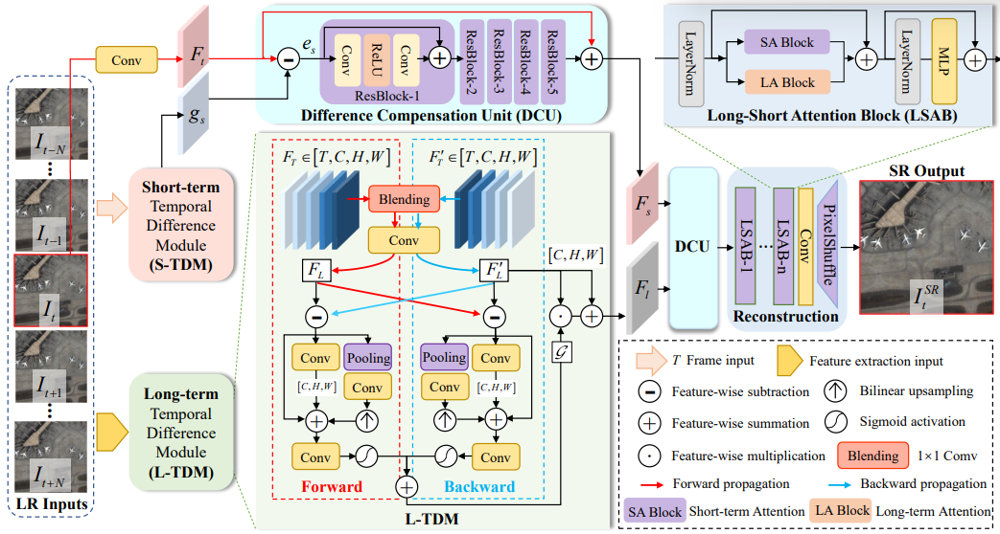
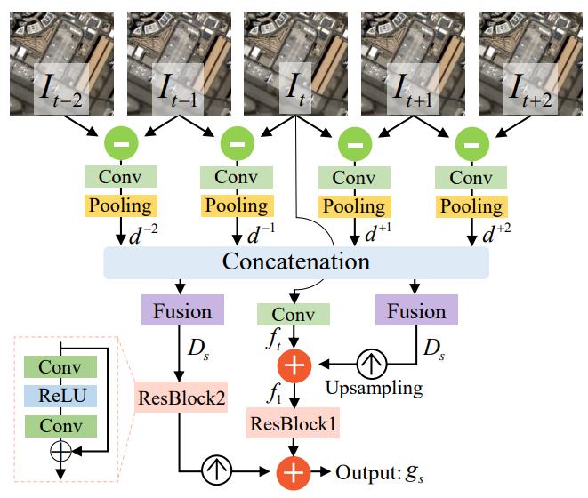
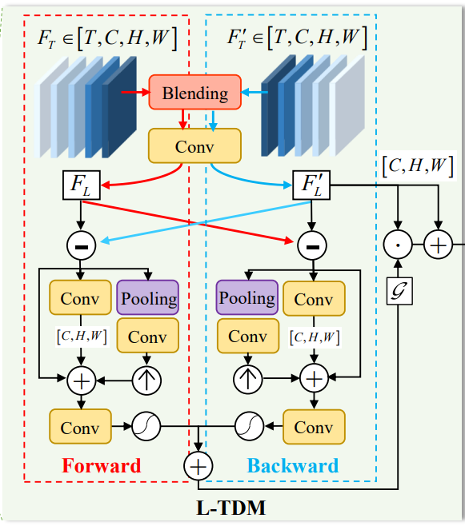

Local-Global Temporal Difference Learning for Satellite Video Super-Resolution
Local-Global Temporal Difference Learning for Satellite Video Super-Resolution
暂时在TCSVT发表
Abstract：
基于光流（optical-flow-based）和基于核（kernel-based）的时间补偿（temporal compensation）方法在卫星视频超分辨率（VSR）中得到了广泛的研究。但这些技术计算量超大，在复杂运动条件下容易失效。
在本文中，我们提出利用定义良好的temporal difference进行efficient和robust的temporal compensation。为了充分利用框架内的时间信息，我们分别建模了短期和长期的temporal difference，因为它们提供了独特的互补特性。specifically，short-term temporal difference module（S-TDM）用于从相邻帧间的residual map提取local motion representation，这能够为精确的纹理表示提供更多的线索，同时，通过L-TDM学习整个帧序列的全局依赖关系。forward和backward segments间的差异合并并激活以调整temporal feature，从而得到整体的global compensation。
此外，我们进一步提出了差分补偿单元（difference compensation unit），以此丰富目标帧的空间分布与补偿结果之间的相互作用（interaction），这有助于在保持空间一致性（spatial consistency）的同时细化特征（refine features），避免misalignment。
Introduction：
整体目的是做motion compensation或者说temporal compensation，用帧间的互补信息做对齐，让效果更好，光流不太好，估计起来费劲，极端情况效果也差。基于kernel的方法如三维卷积，可变卷积（Dconv）等，要么忽略了有价值的temporal先验，要么时空感受野有限，而且复杂运动时容易崩溃。
而且卫星视频的一些特点使TC更复杂，背景占大部分，前景只有几个像素，还有多尺度运动。为了研究卫星VSR中explicit temporal difference的潜力，提出一种global-local temporal difference learning network（TDMVSR）来系统利用全局局部互补信息。建议充分利用局部和全局分布的TD，而不是直接算目标和相邻帧的difference map。
特别的，S-TDM从相邻帧间获得方差较小的局部信息，L-TDM从相邻帧中推断出方差较大的全局信息。S-TDM中，RGB difference map转换为局部运动表示，并提供给具有lateral connections的目标feature。L-TDM通过前向和后向传播来激活未来与过去帧的运动变换。为了解决不对齐问题，增加了目标帧与tdm产生的时域信息间的相互作用。S和L输出依次送入差分补偿单元（DCU），丰富和细化空间特征。
Method
Overview:
整体流程如下图所示，给出2N+1个LR input，，是需要超分的目标帧，其他的是相邻帧，设计了长短俩分支来挖掘global-local互补信息，差分补偿单元DCU的目的是实现TDMs的时间信息与空间特征的交互，补偿后的特征输入重构模块实现超分。

S-TDM接受frame-wise输入，输出short-term补偿结果：，空间特征用卷积从中提取，和被送到插值补偿单元DCU，在的指导下refine补偿后的，从而保持空间一致性，缓解不对齐的现象，refinement过程可以写作：.
其中是short-term temporal compensated feature，L-TDM接受2N+1个feature来得到global temporal difference。这里，我们用五个residual blocks来从中提取特征。以L-TDM的forward branch为例，特征通过一个卷积和另一个卷积进行混合。通过这种方法，我们可以smooth long-range特征，得到forward feature的整体表示，类似的，我们从得到backward global feature ，其中，是的temporal reverse版本。由于L-TDM，我们隐式地产生了一个用于temporal compensation的时间激活temporal activation ，全局时间补偿结果表示为：
其中表示channel-wise的乘，这之后，在的指导下经过DCU模块refine，得到global-local temporal compensated feature ：
最后，经过重构模块得到最终结果：.
Short-term Temporal Difference Module:
通常，相邻帧有较高的冗余，直接concatenating局部帧效率较低，因此用一些短期的temporal difference，以此获得有效的local temporal information compensation。
具体来说，S-TDM从相邻帧的帧差中提取特征，并将局部运动传播到具有lateral connections的目标特征中去，如下图所示：简单起见，设，首先，相邻帧相减，然后卷积提特征，得到，差分的好处，低响应且运动像素突出。由于是稀疏信号，降采样后绰绰有余。

为了使目标特征意识到short-term motion，我们使用two-stage compensation strategy，并为提供了lateral connections（横向连接）。在early stage，融合的temporal 表示会被上采样到原始大小，并添加到目标特征中，表示为：
其中表示双线性上采样，Fusion表示卷积，[]表示通道concatenation。在第二个stage，进一步提取融合的表示和进行深度聚合。最后，短期补偿特征可以写作：
其中res是俩residual block。
Long-term Temporal Difference Module：
虽然S-TDM用帧差建模局部信息，但不能建模受局部感受野限制的长程依赖long-range dependency。因此，L-TDM通过双向temporal difference learning从整个序列中学习时序信息。为处理大运动，同时减轻long-distance帧内的不对齐情况，我们通过多尺度DConv对齐模块使用shadow alignment operation。
因此，粗对齐的特征和可以被压缩来平滑大方差，此外，还计算了其间的temporal difference：，，这样的交叉操作鼓励forward和backward利用不同segment中的互补信息。
在后续转播过程中 ，为了更好地保存卫星视频中的多尺度信息，采用了多尺度设计。特别的，对于global temporal difference 和，应用三种不同尺度的运算：1）用于稳定梯度的Identification connection；2）用卷积在原始scale上进行深度特征提取；3）small-to-large scale的特征传播，通过pooling层、卷积和双线性上采样实现。

三种操作的输出将被聚合并发送到卷积层和sigmoid函数进行激活：
其中，表示前面所述的第i个操作，俩att是forward和backward中的激活映射。将二者组合，得到最终的聚合:
其中为俩平衡系数，设二者为0.5，最后，long-term时序补偿特征由特征调制而成：
Difference Compensation Unit：
利用我们的S-TDM和L-TDM，可以系统地探索global和local的时间信息。然而，由于temporal difference学习仍然存在不对齐的情况，需要对补偿后的特征进一步细化，将有价值的信息补偿到目标帧的空间特征中，并保持空间一致性。设计差分补偿单元（DCU），如大图所示，通过预测空间特征与短期temporal补偿特征间的差值特征，将residual feature 进一步增强并提供给，这样，S-TDM将被迫关注的valuable compensation information。可总结为：
同样，由补偿最终的refinement：
5个residual block。
Reconstruction：
经过short-term和long-term的时序信息补偿后，spatial-temporal 信息发生了纠缠（entangled）。因此，我们不能用简单的设计来重构补偿后的特征（例如residual）。所以用RCAN中效果比较好的通道注意力（CA）和SwinIR中的多头自注意力multi-head self-attention（MSA），之前的工作证明这俩是长短期依赖的专家，在此，我们用CA和MSA对纠缠的global-local信息进行混合（hybrid）重构。
在大图中，short-term attention block（SA Block）是RCAN中的CA，long-term attention block（LA Block）是SwinIR中的MSA。最终用5个long-short attention block（LSAB）和一个pixelshuffle层堆叠起来恢复超分目标帧：
RCAN
paper：Image Super-Resolution Using Very Deep Residual Channel Attention Networks
- 低分辨率图像（LR）的输入和特征包含大量的低频信息，这些信息在通道间被平等对待，从而阻碍了CNNs的表征能力。
- 卷积神经网络（CNN）的深度对于图像超分辨率（SR）是极其关键的因素。然而，作者观察到，更深层次的图像SR网络更难训练。
- 对于第一个更深的网络更难训练的问题，作者研究发现，通过在网络中引入残差块，这种残差块使得网络达到了1000层，但是仅仅通过叠加残差块来构建更深的网络很难获得更好的提升效果。因此，作者提出了残差嵌套（residual in residual，RIR）结构构造非常深的可训练网络，RIR中的长跳连接和短跳连接有助于绕过大量的低频信息，使主网络学习到更有效的信息。
- 对于第二个LR输入低频和高频信息在通道被平等对待的问题，作者发现注意力可以使可用处理资源的分配偏向于输入中信息量最大的部分，因此引入通道注意（Channel Attention ，CA）机制。
SwinIR
《SwinIR- Image Restoration Using Swin Transformer》论文笔记 | Fantast’s Blog